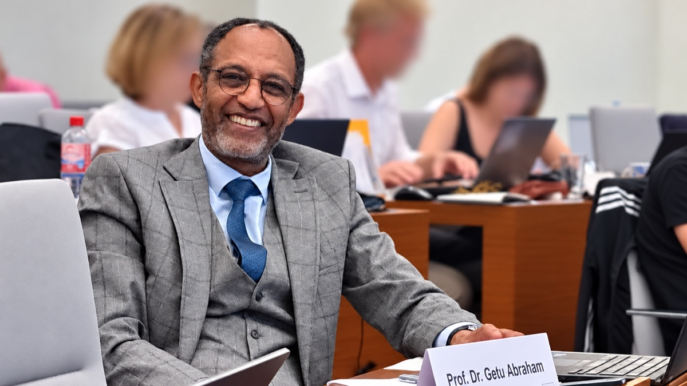

Oberbürgermeisterwahl 2027
Wahlprogramm
Ich möchte Leipzig mit Ihnen gemeinsam voranbringen. In diesen 13 Themen finden Sie meine Vorhaben für unsere Stadt und die Kriterien, an denen Fortschritt erkennbar werden soll. Entdecken Sie die Themen, die Sie bewegen.

Leipzig ist eine traditionsreiche Handels-, Messe- und Wissenschaftsstadt von europäischem Rang – und zugleich eine dynamische Gründerstadt mit starkem Mittelstand, vielfältigem Handwerk und einer außergewöhnlich dichten Hochschul- und Forschungslandschaft.
Diese Stärken zusammenzuführen, gehört zu den wichtigsten Aufgaben der nächsten Jahre. Denn wirtschaftliche Entwicklung entsteht dort, wo unternehmerische Kraft, wissenschaftliche Stärke, internationale Verbindungen und gute Rahmenbedingungen zusammenkommen.
Gute Bedingungen für Unternehmen
Dabei verdienen die Unternehmen, die unsere Stadt heute tragen, ebenso viel Aufmerksamkeit wie die Branchen und Technologien, aus denen neues Wachstum entstehen kann. Mittelständler, Handwerksbetriebe, Selbständige, Händler und Start-ups brauchen verlässliche Rahmenbedingungen. Dazu gehören vor allem erreichbare Ansprechpartner, geeignete Flächen, nachvollziehbare Genehmigungswege und Entscheidungen, mit denen sie planen können.
Aus eigener unternehmerischer Erfahrung weiß ich, wie wichtig Planbarkeit für betriebliche Entscheidungen ist. Wirtschaftsförderung beschränkt sich nicht auf die Ansiedlung neuer Unternehmen. Sie zeigt sich ebenso darin, dass bestehende Betriebe wachsen, investieren, gute Arbeitsplätze sichern und ihre Unternehmensnachfolge gestalten können.
Wissen als wirtschaftliche Kraft
Gleichzeitig verfügt Leipzig mit seiner Universität, seinen Hochschulen und zahlreichen Forschungsinstituten sowie vielen hervorragend ausgebildeten Menschen über ein Potenzial, das noch stärker zur wirtschaftlichen Entwicklung der Stadt beitragen kann. Dieses Wissen ist nicht nur ein Standortvorteil, sondern selbst eine wirtschaftliche Kraft.
Besondere Entwicklungschancen liegen dort, wo starke Forschung, qualifizierte Fachkräfte und wirtschaftliche Anknüpfungspunkte bereits zusammentreffen – etwa in Life Sciences und Medizin, der Digitalwirtschaft sowie bei Umwelt-, Energie- und Wassertechnologien.
Frühe Kontakte von Studierenden zu Leipziger Unternehmen erleichtern den Übergang in die berufliche Praxis. Gute Perspektiven in Wissenschaft, Gründung und Wirtschaft erhöhen zugleich die Chance, dass hervorragend ausgebildete Menschen nach ihrem Abschluss in Leipzig bleiben – ein Anliegen, das mir als Wissenschaftler besonders am Herzen liegt.
Aus Wissen Innovation, Gründungen und Ansiedlungen machen
Entscheidend ist, dass wissenschaftliche Erkenntnisse häufiger den Weg in praktische Anwendung und wirtschaftliche Wertschöpfung finden. Dafür müssen Forschungskompetenzen und konkrete Bedarfe von Unternehmen gezielter zusammengebracht werden.
Aus meiner wissenschaftlichen Arbeit weiß ich, wie sehr erfolgreiche Forschung und ihr Transfer von tragfähigen Netzwerken und passenden Partnern abhängen. Diese Erfahrung und meine fachlichen Kontakte bringe ich für Leipzig ein, damit Forschungseinrichtungen, Unternehmen, Gründer und Investoren leichter zueinanderfinden. Wissenschaftstransfer erschöpft sich nicht in Start-ups: Aus Forschung können neue Produkte und Dienstleistungen, Kooperationen mit bestehenden Unternehmen, Ausgründungen und neue Unternehmensansiedlungen entstehen.
Der BioCity Campus auf der Alten Messe zeigt bereits, wie eng Wissenschaft und wirtschaftliche Entwicklung auch räumlich zusammenfinden können. Mit dem Innovationszentrum „one2“ entstehen dort weitere Labor-, Büro- und Entwicklungsflächen für junge und technologieorientierte Unternehmen. Solche Standorte möchte ich als Orte für Forschungsausgründungen, Kooperationen und neue Unternehmensansiedlungen weiter stärken.
Zusammenarbeit organisieren – Ergebnisse überprüfen
Ein regelmäßiger Leipziger Wissenschafts- und Wirtschaftsdialog soll Unternehmen, Wissenschaft, Kammern und Gewerkschaften sowie Stadtverwaltung und Wirtschaftsförderung zusammenbringen, um konkrete Hindernisse, Kooperationsmöglichkeiten und Entwicklungspotenziale zu benennen, Lösungen zu erarbeiten und deren Umsetzung zu überprüfen. Zugleich sollen Transferchancen sichtbar und die passenden Ansprechpartner aus Wissenschaft und Wirtschaft miteinander verbunden werden.
Leipzigs Wirtschaft und Wissenschaft international stärker vernetzen
Leipzigs Weltoffenheit prägte über Jahrhunderte auch seine wirtschaftliche Stärke. Europa, Nordamerika und Fernost bleiben für Leipzig die wichtigsten wirtschaftlichen und wissenschaftlichen Bezugsräume. Zugleich bietet der globale Süden mit seinen neuen dynamischen Regionen Asiens, Afrikas sowie Mittel- und Südamerikas neue, zusätzliche Chancen. Mit ausgewählten Partnern möchte ich die Beziehungen dort vertiefen, wo Leipziger Unternehmen, Hochschulen und Forschungseinrichtungen konkrete gemeinsame Interessen haben – Motto: BUSINESS MEETS LEIPZIG.
Meine langjährigen internationalen Kontakte in Wissenschaft und Wirtschaft sowie zu Auslandsvertretungen bringe ich dafür ein: Einmal im Jahr wird sich der Leipziger Wissenschafts- und Wirtschaftsdialog international öffnen und internationale Wirtschafts- und Wissenschaftspartner im Rahmen eines Business Forums sowie – wo es für konkrete Vorhaben sinnvoll ist – Fachvertreter von Auslandsvertretungen einbeziehen.
Der Flughafen Leipzig/Halle bleibt dabei ein wichtiger Teil der internationalen Anbindung unserer Region. Über seine Entwicklung entscheidet Leipzig nicht allein. Die Stadt muss ihre Interessen mit Nachdruck vertreten und gemeinsam mit Sachsen, Sachsen-Anhalt und weiteren Partnern daran arbeiten, seine Funktion für Wirtschaft, Wissenschaft, Messe, Kongresse, Tourismus und internationale Kontakte weiterzuentwickeln.
Leipzig als internationale Wissenschafts- und Kongressstadt
Als profilierter Kongressstandort verbindet Leipzig Wissenschaft, Wirtschaft, Kultur und Tourismus in besonderer Weise. Diese Stärke möchte ich ausbauen. Dort, wo unsere Hochschulen und Forschungsinstitute besondere Expertise besitzen, soll die bestehende Zusammenarbeit von wissenschaftlichen Netzwerken, Messe und Congress Center, Wirtschaftsförderung und Tourismusakteuren weiterentwickelt werden, um zusätzliche internationale Fachkongresse und wissenschaftliche Großveranstaltungen für Leipzig zu gewinnen.
Was persönliche wissenschaftliche Vernetzung dabei bewirken kann, erlebe ich selbst unmittelbar als Angehöriger des Organisationskomitees des Internationalen Toxikologie-Kongresses 2031 (International Congress of Toxicology 2031), der nach Leipzig vergeben wurde. Er wird im Congress Center Leipzig (CCL) stattfinden, es werden rund 1.500 Teilnehmer aus aller Welt erwartet. Auch der Leipziger Tierärztekongress hat sich mit weit über 7.000 Teilnehmern als feste Größe für unsere Stadt etabliert. Solche Kongresse bringen nicht nur Wissen und internationale sowie nationale Kontakte in die Stadt. Sie stärken zugleich Messe und Congress Center, Hotellerie, Gastronomie und Dienstleister und erhöhen Leipzigs Sichtbarkeit in internationalen Fachnetzwerken. Hier greifen Wissenschafts-, Standort- und Wirtschaftspolitik unmittelbar ineinander.
Mein Ziel ist eine Stadt, in der wirtschaftliche Stärke und neues Wissen einander verstärken – und daraus neue Chancen, attraktive Arbeitsplätze und mehr Wohlstand für Leipzig entstehen.
Fortschritt wird daran erkennbar, dass
- Unternehmen bei Investitions-, Erweiterungs- und Standortvorhaben verlässliche Ansprechpartner erreichen, kommunale Verfahrenswege nachvollziehbar sind und städtische Entscheidungen ihnen verlässliche Planung ermöglichen,
- mehr konkrete Kooperationen zwischen Forschung und Leipziger Unternehmen entstehen und mehr Forschungs- und Transferprojekte in konkrete Anwendungen, Produkte oder Dienstleistungen münden,
- zusätzliche Ausgründungen aus Leipzigs Wissenschafts- und Forschungslandschaft entstehen und Leipzig weitere forschungs- und innovationsnahe Unternehmensansiedlungen gewinnt,
- aus dem Leipziger Wissenschafts- und Wirtschaftsdialog – einschließlich seiner internationalen Öffnung – konkrete Vorhaben hervorgehen und deren Umsetzung nachvollziehbar dokumentiert und regelmäßig überprüft wird,
- Leipzig zusätzliche internationale Fachkongresse gewinnt, die an besondere wissenschaftliche Kompetenzen der Stadt anknüpfen.
Der Oberbürgermeister und die Verwaltung stehen im Dienst aller Leipziger. Bürgernähe und Zukunftsfähigkeit zeigen sich auch darin, wie unkompliziert und verlässlich Verwaltung im Alltag funktioniert. Wer einen Ausweis beantragen, ein Haus umbauen, ein Unternehmen gründen, einen Laden eröffnen oder ein Kulturprojekt starten will, soll schnell wissen, wer zuständig ist, was benötigt wird und wie es weitergeht. Dazu gehören zeitnah verfügbare Termine und eine Bearbeitung ohne unnötige Umwege.
Ein Anliegen, ein klarer Weg
Eine Großstadtverwaltung ist zwangsläufig komplex. Wer sich an die Stadt wendet, sollte aber nicht erst ihre innere Organisation verstehen müssen. Gerade bei ämterübergreifenden Anliegen ist die Abstimmung möglichst innerhalb der Verwaltung zu organisieren und klar zu benennen, wer die Koordination übernimmt.
Digitalisierung, die wirklich Zeit spart
Digitalisierung ist dann gut, wenn sie Wege erspart und Verfahren beschleunigt. Weitere häufig genutzte Leistungen sollen deshalb Schritt für Schritt vollständig digital erledigt werden können – von der Information über Antrag und Nachweise bis zur Rückmeldung der Verwaltung. Zugleich bleibt der persönliche Zugang für alle erhalten, die ihn wünschen oder benötigen.
Wissen, woran man ist
Wer einen Antrag gestellt hat, sollte nicht mehrfach nachfragen müssen, nur um zu erfahren, ob er eingegangen ist, was noch fehlt oder wie es weitergeht. Bei geeigneten Verfahren schafft deshalb ein nachvollziehbarer Bearbeitungsstatus Klarheit. Er macht sichtbar, ob ein Antrag eingegangen ist, welche nächsten Schritte anstehen, welche Unterlagen fehlen und ob sich Wesentliches verändert hat. Für häufig wiederkehrende Verwaltungsleistungen sollen klare Bearbeitungsziele gelten. Wenn sich etwas verzögert, soll die Verwaltung frühzeitig darüber informieren.
Modernisierung gemeinsam mit den Beschäftigten
Eine bessere Verwaltung entsteht gemeinsam mit den Menschen, die in ihr arbeiten. Die Beschäftigten wissen häufig am besten, wo Verfahren unnötig kompliziert sind, Schnittstellen nicht funktionieren oder Zeit verloren geht. Ihre Erfahrung gehört deshalb an den Anfang jeder Modernisierung.
Dazu gehören klare Verantwortung und eine verlässliche Zusammenarbeit über Ämter- und Dezernatsgrenzen hinweg ebenso wie gute Qualifizierung und Entwicklungsmöglichkeiten für die Beschäftigten. Deshalb sollen umständliche Abläufe gemeinsam mit den Beschäftigten vereinfacht werden, statt sie lediglich digital abzubilden.
Was sich in anderen Städten bewährt hat und zu Leipzig passt, sollten wir pragmatisch übernehmen und weiterentwickeln. So erleichtert digitale Technik Routineaufgaben und schafft mehr Zeit für die Anliegen, bei denen persönliche Beratung, fachliche Einschätzung und verantwortliche Entscheidungen gefragt sind.
Mein Ziel ist eine Verwaltung, die den Menschen und der Stadt dient, das Leben einfacher macht und wirtschaftliche und gesellschaftliche Initiative unterstützt – verständlich, verlässlich, digital, wo es sinnvoll ist, und persönlich, wo es darauf ankommt.
Fortschritt wird daran erkennbar, dass
- Warte- und Bearbeitungszeiten bei stark nachgefragten Leistungen kürzer werden,
- mehr häufig genutzte Verwaltungsleistungen vollständig digital erledigt werden können,
- bei geeigneten Verfahren Bearbeitungsstand und notwendige nächste Schritte nachvollziehbar sind,
- ämterübergreifende Anliegen verlässlich koordiniert werden und klar ist, wer dafür Verantwortung trägt, und
- Bürger und Unternehmen seltener wegen ein und desselben Anliegens Kontakt zur Verwaltung aufnehmen müssen.
Eine finanziell handlungsfähige Stadt kann Schulen erhalten, Infrastruktur erneuern und das gesellschaftliche Leben verlässlich unterstützen. Leipzig steht dabei vor schwierigen Entscheidungen. Der Haushaltsentwurf für 2027/28 verbindet erhebliche Konsolidierungsmaßnahmen mit weiteren Investitionen, zugleich ist ein deutlicher Anstieg der Verschuldung vorgesehen. Die finanzielle Lage verlangt konsequentes Handeln in Leipzig und eine entschlossene Vertretung unserer Interessen gegenüber Freistaat und Bund.
Den Haushalt stabilisieren und Verantwortung übernehmen
Als Oberbürgermeister werde ich die Haushaltskonsolidierung gemeinsam mit dem Finanzdezernat und den übrigen Verwaltungsbereichen zur verbindlichen Führungsaufgabe machen. An den laufenden Arbeiten zum Haushaltsstrukturkonzept setze ich an. Entscheidend ist, welche Maßnahmen den Haushalt dauerhaft entlasten, wie sie sich auf Leistungen und Arbeitsfähigkeit auswirken und ob die erwarteten Verbesserungen tatsächlich eintreten.
Die Feststellungen der überörtlichen Rechnungsprüfung sind dabei eine wichtige Arbeitsgrundlage. Ich werde darauf hinwirken, dass aus ihnen unter Berücksichtigung der Stellungnahmen der Stadt und bereits erfolgter Korrekturen konkrete Maßnahmen mit Verantwortlichkeiten und Fristen abgeleitet werden. Der Stadtrat und die Öffentlichkeit sollen nachvollziehen können, welche Mängel behoben wurden, welche Schritte noch ausstehen und wo unterschiedliche Bewertungen bestehen.
Mein Ziel ist, strukturelle Fehlbeträge abzubauen, den weiteren Schuldenanstieg zu begrenzen und die Voraussetzungen für einen nachhaltigen Schuldenabbau zu schaffen. Dazu gehört, wieder ausreichend eigene Mittel für die Tilgung und einen größeren Anteil der Investitionen zu erwirtschaften. Der Weg dorthin muss in der mehrjährigen Finanzplanung belastbar hinterlegt sein. Unsichere Entlastungen durch Land oder Bund und erhoffte Wachstumserträge dürfen dabei nicht als gesicherte Mittel behandelt werden.
Wo Mittel nicht ausreichen, werde ich dem Stadtrat begründete Prioritäten und konkrete Vorschläge zur Anpassung, zeitlichen Staffelung oder Aufgabe von Vorhaben vorlegen und dafür Mehrheiten suchen. Gesetzliche Verpflichtungen und aufsichtsrechtliche Vorgaben bilden den Rahmen. Innerhalb der verbleibenden Spielräume zählen Dringlichkeit, Nutzen für die Stadtgesellschaft und langfristige Kosten. Auch bei freiwilligen Leistungen ist abzuwägen, welche Folgen Einschnitte für Teilhabe, Zusammenhalt und die Attraktivität Leipzigs hätten. Notwendige Entscheidungen werde ich vertreten und ihre Auswirkungen offen erklären.
Mittel wirksam einsetzen und Zukunftsfähigkeit erhalten
Bei Investitionen müssen Bedarf, Finanzierung und spätere Betriebs- und Unterhaltungskosten zusammen betrachtet werden. Ebenso gehört auf den Tisch, welche Schäden und Mehrkosten durch Aufschub entstehen. Notwendiger Substanzerhalt und vorausschauende Investitionen sind Teil einer soliden Haushaltsführung. Fördermittel sollen dort genutzt werden, wo ein Vorhaben fachlich überzeugt und Eigenanteil sowie Folgekosten tragbar sind.
Personalentscheidungen müssen sich an Aufgaben, Arbeitsbelastung und der erforderlichen Qualität städtischer Leistungen orientieren. Doppelarbeit, entbehrliche Abläufe und vermeidbarer Aufwand werden gemeinsam mit den Beschäftigten und ihren Vertretungen überprüft. Wo Aufgaben entfallen oder Prozesse weniger Arbeit erfordern, ist die Personalplanung anzupassen. Wo Engpässe notwendige Leistungen behindern, sind Ressourcen gezielter einzusetzen. Einsparungen müssen tatsächlich entstehen und dürfen nicht lediglich Arbeit, Wartezeiten oder Kosten an andere Stellen verlagern.
Zur finanziellen Verantwortung gehören auch die städtischen Unternehmen und Beteiligungen. Über die zuständigen Gremien werde ich darauf hinwirken, dass öffentlicher Auftrag, wirtschaftliche Leistungsfähigkeit und Investitionsbedarf gemeinsam bewertet werden. Zuschüsse, Ausschüttungen, Darlehen und Bürgschaften sind mit ihren Auswirkungen auf den Stadthaushalt zu betrachten. Ausschüttungserwartungen müssen die dauerhafte Leistungsfähigkeit der Unternehmen berücksichtigen, finanzielle Risiken sollen rechtzeitig erkennbar werden.
Eine breitere wirtschaftliche Basis stärkt langfristig auch die eigenen Einnahmen Leipzigs. Gute Bedingungen für bestehende Unternehmen, Gründungen und Ansiedlungen sowie die Verbindung von Wissenschaft und Wirtschaft gehören deshalb zur finanziellen Zukunftsvorsorge. Diese Entwicklung braucht Zeit und eine vorsichtige Einnahmenplanung.
Leipzigs Interessen gegenüber Land und Bund durchsetzen
Die kommunale Eigenverantwortung verbinde ich mit einem klaren Anspruch an die sächsische Staatsregierung und die Bundesregierung: Aufgaben, Entscheidungsmöglichkeiten und Finanzierung müssen zwischen den staatlichen Ebenen fair verteilt sein. Wer Leistungen gesetzlich vorgibt oder Standards erhöht, muss deren verlässliche Finanzierung mit gewährleisten. Kommunen brauchen außerdem ausreichenden Spielraum für eigene Prioritäten.
Ich werde mich offensiv für eine aufgabengerechte Finanzausstattung Leipzigs einsetzen. Dazu gehören eine angemessene Beteiligung an den Kosten gesetzlich bestimmter Leistungen, insbesondere im Sozialbereich, ein bedarfsgerechter kommunaler Finanzausgleich und verlässliche Investitionsmittel. Ebenso werde ich darauf drängen, Aufgabenverteilung, Standards und Nachweispflichten dort zu verändern, wo sie unnötigen Aufwand verursachen oder wirksames Handeln vor Ort erschweren.
An die laufende Ermittlung kommunaler Belastungen knüpfe ich an: Leipzig muss nachvollziehbar darlegen können, welche Aufgaben welche Kosten verursachen, welche Finanzierung ihnen gegenübersteht und wo strukturelle Lücken verbleiben. Mit diesen Befunden werde ich konkrete Forderungen gegenüber den zuständigen Ministerien und Abgeordneten vertreten und gemeinsam mit anderen Kommunen sowie den kommunalen Spitzenverbänden auf Änderungen hinwirken. Maßgeblich ist, was Leipzig wirksam entlastet – unabhängig davon, welche Parteien in Dresden oder Berlin regieren.
Leipzig soll seine Verpflichtungen verlässlich erfüllen und wieder mehr aus eigener Kraft gestalten können. Solide Finanzen geben den Menschen Sicherheit und der Stadt Freiheit für ihre Zukunft.
Fortschritt wird daran erkennbar, dass
- strukturelle Fehlbeträge zurückgehen und die Stadt wieder mehr Mittel für Tilgung und notwendige Investitionen selbst erwirtschaftet,
- die Verschuldung einem nachvollziehbaren Konsolidierungspfad folgt und Abweichungen frühzeitig offengelegt und mit konkreten Gegenmaßnahmen beantwortet werden,
- priorisierte Investitionen verlässlich umgesetzt und notwendige Erhaltungsmaßnahmen nicht dauerhaft aufgeschoben werden,
- Veränderungen beim Personaleinsatz nachweislich Aufwand verringern und die Erfüllung notwendiger Aufgaben sichern,
- wesentliche Prüfungsfeststellungen bearbeitet und finanzielle Risiken aus städtischen Beteiligungen rechtzeitig in Entscheidungen berücksichtigt werden,
- Leipzigs Forderungen an Land und Bund mit nachvollziehbaren Kosten belegt sind und öffentlich erkennbar wird, welche finanziellen oder organisatorischen Entlastungen erreicht wurden.
Mobilität schafft Freiheit im Alltag. Leipzig braucht deshalb gute Verbindungen zu Fuß und mit dem Rad, mit Bus und Bahn ebenso wie mit dem Auto. Welches Verkehrsmittel jemand nutzt, hängt vom jeweiligen Weg und der eigenen Lebenssituation ab – aber auch von persönlichen Vorlieben. Die situative Entscheidung bleibt letztlich individuell und verdient Respekt.
Wahlfreiheit und Erreichbarkeit
Gute Verkehrspolitik schafft echte Wahlmöglichkeiten und setzt das UND vor das ODER. Wo Straßenraum begrenzt ist, sind Interessen abzuwägen und Prioritäten zu setzen. Auch dann darf keine Verkehrsart pauschal benachteiligt werden. Die Urbanität einer modernen Stadtgesellschaft zeigt sich auch in der Vielfalt ihrer Mobilität. Das Auto gehört dazu. Mit dem Wandel zu elektrischen Antrieben wird es zunehmend emissionsärmer.
Attraktive Alternativen sollen vor allem durch ihre Qualität überzeugen. Wo der Autoverkehr eingeschränkt wird, sollte jeweils ein konkreter Nutzen für Sicherheit, Stadtqualität oder das Funktionieren des Verkehrsnetzes erkennbar sein. Wohngebiete und Innenstadt, Betriebe und öffentliche Einrichtungen müssen zugleich verlässlich erreichbar bleiben.
Für Handel, Handwerk und Dienstleistungsbetriebe ist entscheidend, dass Kundschaft, Beschäftigte sowie Liefer- und Serviceverkehre gut ans Ziel kommen. Den in Arbeit befindlichen Wirtschaftsverkehrsentwicklungsplan möchte ich deshalb zügig voranbringen und dabei konkrete Ergebnisse erreichen – mit praxistauglichen Be- und Entladezonen, Stellmöglichkeiten für Servicefahrzeuge und einer besseren Erreichbarkeit von Gewerbestandorten.
Sicher und barrierearm unterwegs
Leipzig braucht möglichst durchgängige Fuß- und Radverbindungen, gut zugängliche Haltestellen und sichere Querungen. Besondere Aufmerksamkeit verdienen Schulwege, stark genutzte Umsteigepunkte sowie die Bedürfnisse älterer Menschen und von Menschen mit Behinderung.
Den bestehenden Mängelmelder möchte ich um die Möglichkeit ergänzen, Barrieren und Gefahrenstellen einfach direkt von vor Ort aus zu melden. Wiederkehrende Meldungen sollen systematisch in die Bewertung einbezogen werden. Bekannte Lücken und Konfliktstellen sollen nachvollziehbar priorisiert und Schritt für Schritt entschärft werden.
Infrastruktur erhalten, Baustellen besser koordinieren
Eine wachsende Stadt muss Straßen, Wege, Brücken, Gleise und Versorgungsnetze erhalten und erneuern. Unvermeidbare Baustellen brauchen deshalb eine umso bessere Abstimmung. Größere Vorhaben sollen aus Sicht des gesamten Verkehrsnetzes koordiniert, parallele Einschränkungen wichtiger Ausweichstrecken möglichst vermieden und wesentliche Änderungen rechtzeitig und verständlich kommuniziert werden. Besonders wichtig ist, dass Rettungs- und Krankentransporte auch bei größeren Baustellen und Engpässen verlässlich durch die Stadt kommen.
Die Hitzeschäden im Straßenbahnnetz im Sommer 2026 haben zudem gezeigt, wie wichtig eine widerstandsfähige Infrastruktur ist. Dazu sind bereits eingeleitete Maßnahmen konsequent weiterzuführen und gewonnene Erkenntnisse auch bei künftiger Erneuerung und Instandhaltung zu berücksichtigen.
Stadt und Region verlässlich verbinden
In äußeren Stadtteilen zählt verlässliche Erreichbarkeit. Das erfordert nicht überall dasselbe Angebot. Bereits begonnene Verbesserungen im Liniennetz sollen weiterentwickelt und daran gemessen werden, wie gut Anschlüsse funktionieren und wichtige Ziele zu den benötigten Zeiten erreichbar sind. Wo ein dichter Linienverkehr nicht sinnvoll ist, können flexible Angebote eine gute Alternative sein und zugleich ermöglichen, Kapazitäten gezielter einzusetzen.
Leipzig endet verkehrlich nicht an der Stadtgrenze. Deshalb muss die Stadt gemeinsam mit ihren Partnern im Umland, den zuständigen Aufgabenträgern und Verkehrsunternehmen auf gute Verbindungen im Regional- und S-Bahn-Verkehr sowie eine bessere Anbindung wichtiger Arbeits- und Gewerbestandorte hinwirken.
Mein Ziel ist eine Stadt, in der Mobilität Freiheit schafft und verbindet – weil unterschiedliche Angebote echte Wahlmöglichkeiten eröffnen, notwendige Abwägungen fair getroffen werden, Menschen ihre Ziele sicher und verlässlich erreichen und Wirtschaft, Stadtteile und Umland gut angebunden bleiben.
Fortschritt wird daran erkennbar, dass
- bei größeren Verkehrsplanungen die Auswirkungen auf Erreichbarkeit, Sicherheit und die unterschiedlichen Verkehrsarten nachvollziehbar dargestellt und Einschränkungen konkret begründet werden,
- aus dem Wirtschaftsverkehrsentwicklungsplan konkrete und umgesetzte Verbesserungen bei Be- und Entladezonen, Stellmöglichkeiten für Servicefahrzeuge und der Erreichbarkeit von Gewerbestandorten hervorgehen,
- bekannte Lücken, Barrieren und Konfliktstellen im Fuß- und Radverkehr sowie an wichtigen Haltestellen und Querungen nach nachvollziehbarer Priorisierung Schritt für Schritt reduziert werden,
- parallele Einschränkungen wichtiger Ausweichstrecken bei größeren Baustellen seltener werden und wesentliche Änderungen rechtzeitig kommuniziert werden,
- in äußeren Stadtteilen die Anschlüsse im städtischen ÖPNV zuverlässiger funktionieren und wichtige Ziele zu den benötigten Zeiten besser erreichbar sind.
Gute Bildung eröffnet Lebenschancen und stärkt die Zukunft unserer Stadt. Kinder brauchen Orte, an denen sie neugierig lernen, ihre Fähigkeiten entdecken und Unterstützung erhalten. Eltern brauchen verlässliche Betreuung und die Gewissheit, dass ihre Anliegen ernst genommen werden. Als Kind von Eltern, die selbst nicht lesen und schreiben konnten, habe ich erfahren, welche Möglichkeiten Bildung eröffnen kann.
Leipzig trägt dazu wesentlich bei – durch Schulgebäude und Ausstattung, sichere Wege, Kindertagesbetreuung und ergänzende Bildungsangebote. Unterricht, Lehrpläne und die Versorgung mit Lehrkräften liegen vor allem beim Freistaat Sachsen. Als Oberbürgermeister werde ich die kommunalen Handlungsspielräume konsequent nutzen und die Zusammenarbeit mit den Verantwortlichen im Land aktiv gestalten.
Schulen unterstützen und Vorhaben verlässlich umsetzen
Auf der bestehenden Schulentwicklungsplanung und Schulbaustrategie aufbauend werde ich mit der Verwaltung die Prioritäten für Neubau, Sanierung und Ausstattung regelmäßig überprüfen und dem Stadtrat zur Entscheidung vorlegen. Maßgeblich sind der Bedarf an Schulplätzen, der Zustand der Gebäude und die Auswirkungen auf den Schulalltag. Planungsstand, Finanzierung und Zeitplan sollen für Einrichtungen und Familien nachvollziehbar sein. Wesentliche Änderungen und Verzögerungen müssen frühzeitig erklärt werden.
Einmal jährlich werde ich alle Leipziger Schulleitungen zu einem strukturierten Austausch über infrastrukturelle und organisatorische Anliegen einladen. Die zuständigen Verwaltungsbereiche nehmen daran teil und vereinbaren, wer welche Aufgabe bis wann bearbeitet. Bei Anliegen von Schulen und Kitas, die mehrere Ämter betreffen, soll ein klar benannter Ansprechpartner die Klärung über Zuständigkeitsgrenzen hinweg koordinieren.
Bildungschancen erweitern und Fähigkeiten fördern
Kinder mit ungünstigen Bildungsvoraussetzungen brauchen gezielte Unterstützung. Dafür möchte ich die Zusammenarbeit von Schulen, Schulsozialarbeit und Jugendhilfe stärken und dazu beitragen, dass bestehende Lern- und Förderangebote die Kinder erreichen, die sie besonders benötigen. Unterstützung soll früh ankommen und Familien verständlich vermittelt werden.
Aus meiner Tätigkeit als Hochschullehrer weiß ich, wie viel Schulen und Hochschulen voneinander gewinnen können. Leipzig verfügt bereits über Kooperationen, an die sich anknüpfen lässt. Gemeinsam mit den Einrichtungen werde ich zusätzliche Partnerschaften zur Lernförderung, für Einblicke in wissenschaftliches Arbeiten und zur Entfaltung besonderer Begabungen erschließen. Die Stadt kann Kontakte vermitteln und organisatorische Hürden abbauen. Die pädagogische Gestaltung bleibt bei den beteiligten Fachleuten.
Betreuung und sichere Wege im Familienalltag
Kitas und Horte sind Bildungsorte und eine wichtige Voraussetzung dafür, dass Familien ihren Alltag organisieren können. Die bestehende Bedarfsplanung soll Veränderungen in den Stadtteilen früh erkennen und verlässlich abbilden. Dabei sind auch die Erreichbarkeit, benötigte Betreuungszeiten und die Abstimmung zwischen Schule und Hort wichtig. Veränderungen bei Standorten oder Angeboten werde ich gemeinsam mit den Trägern frühzeitig mit den betroffenen Familien beraten. Entscheidungen brauchen nachvollziehbare Gründe und praktikable Lösungen für die Kinder und ihre Eltern.
Als Vater weiß ich, wie viel es bedeutet, sein Kind morgens mit gutem Gefühl auf den Weg schicken zu können. Auf den bestehenden Schulwegplänen und der Arbeit zur Schulwegsicherheit werde ich aufbauen. Kreuzungen, Beleuchtung, Haltestellen und Baustellen sollen dabei konsequent aus der Perspektive von Kindern betrachtet werden. Hinweise von Schulen, Eltern und Kindern helfen, Gefahrenstellen zu erkennen. Dringliche Risiken haben Vorrang, notwendige Verbesserungen werden zwischen den zuständigen Stellen abgestimmt und ihre Umsetzung nachverfolgt.
Leipzig soll Kindern Raum geben, ihre Möglichkeiten zu entdecken, und Familien einen Alltag ermöglichen, auf den sie sich verlassen können. Dafür übernimmt die Stadt Verantwortung – vom Weg zur Kita bis zu guten Bedingungen für das Lernen.
Fortschritt wird daran erkennbar, dass
- priorisierte Bau- und Sanierungsvorhaben entsprechend ihrer beschlossenen Priorisierung vorankommen und Planungsstand, Zeitplan sowie wesentliche Abweichungen nachvollziehbar sind,
- Schulen bei ämterübergreifenden organisatorischen Anliegen einen klar benannten Ansprechpartner und eine nachvollziehbare Rückmeldung erhalten,
- Kinder mit Unterstützungsbedarf über Schule, Schulsozialarbeit und Jugendhilfe verlässlich an passende Lern- und Hilfsangebote vermittelt werden,
- zusätzliche Kooperationen zwischen Schulen und Hochschulen konkrete Lern- und Förderangebote hervorbringen,
- die Betreuungsplanung Veränderungen des Bedarfs in den Stadtteilen nachvollziehbar abbildet und betroffene Familien bei Standort- oder Angebotsänderungen frühzeitig einbezogen werden,
- erkannte Gefahrenstellen auf Schulwegen nach Dringlichkeit entschärft werden.
Eine bezahlbare Wohnung eröffnet Möglichkeiten: den Start in Ausbildung oder Studium, Platz für eine Familie, ein selbstbestimmtes Leben im Alter. Steigende Mieten und ein knappes Angebot an passenden Wohnungen erschweren vielen Leipzigerinnen und Leipzigern diese Schritte. Wer seine Wohnsituation verändern möchte, braucht eine realistische Perspektive – möglichst auch im vertrauten Viertel.
Wohnraum schaffen und bezahlbar machen
Leipzig hat Einfluss darauf, wo und in welcher Dichte zusätzlicher Wohnraum entstehen kann und wie verlässlich der Weg von der Planung bis zur Baugenehmigung verläuft. Gemeinsam mit dem Stadtrat lassen sich geeignete Flächen entwickeln und die Voraussetzungen für ihre Bebauung schaffen. Dazu gehören Baulücken, geeignete Aufstockungen und die Umnutzung bestehender Gebäude.
Auch höhergeschossiges Bauen verdient an dafür geeigneten Standorten eine offene Prüfung. Wo Stadtbild, Nachbarschaft, Erschließung und Infrastruktur es tragen, können zusätzliche Geschosse bis hin zu moderner Hochhausbebauung neuen Wohnraum schaffen und vorhandenen Boden sparsamer nutzen. Nicht jedes Quartier eignet sich dafür. Ich will deshalb geeignete Standorte städtebaulich prüfen lassen und dort, wo die Abwägung überzeugt, entsprechende Planungen vorantreiben und dem Stadtrat zur Entscheidung vorlegen.
Zinsen und überregionale Baukosten kann die Stadt dagegen kaum beeinflussen; den gesetzlichen Rahmen setzen Bund und Freistaat. Umso wichtiger ist es, die kommunalen Möglichkeiten für ein größeres und vielfältigeres Wohnungsangebot konsequent zu nutzen.
Die Leipziger Wohnungs- und Baugesellschaft LWB trägt mit ihrem Wohnungsbestand und ihrem laufenden Neubauprogramm wesentlich zur Versorgung bei. Ich will darauf hinwirken, dass ihre Neubauziele wirtschaftlich tragfähig, mit nachvollziehbaren Umsetzungsschritten hinterlegt und am tatsächlichen Bedarf ausgerichtet sind. Dazu gehören kleine Wohnungen für den Berufseinstieg ebenso wie familiengerechte und barrierefreie Angebote. Zusammen mit Genossenschaften, privaten Bauherren und dem Studentenwerk kann Leipzig ein breiteres Angebot ermöglichen.
Wo Förderprogramme von Bund oder Freistaat zur Schaffung bezahlbaren Wohnraums zur Verfügung stehen, soll Leipzig sie sinnvoll nutzen und geeignete Vorhaben frühzeitig darauf ausrichten. Zugleich werde ich mich gegenüber Bund und Freistaat für verlässliche Rahmenbedingungen einsetzen, die Investitionen in zusätzlichen Wohnraum erleichtern.
Zügiger und verlässlich bauen
Die bereits eingeleitete Nutzung des Bauturbos bietet einen Ansatz, auf dem Leipzig aufbauen kann. Ich will die kommunalen Spielräume konsequent nutzen: Anforderungen früh klären, beteiligte Ämter rechtzeitig zusammenbringen und vermeidbare Wartezeiten zwischen einzelnen Prüfschritten abbauen. Bauherren brauchen nachvollziehbare Auskünfte darüber, welche Unterlagen fehlen und welche Entscheidungen noch ausstehen. Das schafft Planungssicherheit und erleichtert Investitionen.
Beschleunigung bleibt an Rechtssicherheit, transparente Entscheidungen und die sorgfältige Abwägung berechtigter Schutzinteressen gebunden. Die Verträglichkeit mit der Nachbarschaft und Anforderungen an Umwelt- und Denkmalschutz gehören frühzeitig in die Planung. Die Erfahrungen mit seriellen Bauweisen, bei denen vorgefertigte Elemente Bauzeit und Kosten verringern können, lassen sich für weitere geeignete Vorhaben nutzen. Gemeinsam mit der Bauwirtschaft kommen ergänzend überschaubare Pilotprojekte infrage, etwa für flexible Grundrisse oder gemeinschaftliches Wohnen junger Menschen. Entscheidend ist ihr nachweisbarer Nutzen für Baukosten, Wohnqualität und spätere Mieten.
Im vertrauten Viertel Perspektiven behalten
Gewachsene Quartiere wie Grünau und Teile des Leipziger Ostens brauchen eine Entwicklung, die an ihren jeweiligen Stärken und Bedürfnissen ansetzt. Dazu gehören passende Wohnungsgrößen, besser zugängliche Wohnungen und ein Wohnumfeld, das den Alltag in unterschiedlichen Lebensphasen erleichtert. Gerade für ältere Menschen zählt, ob sie Einkaufsmöglichkeiten, Unterstützung und vertraute Kontakte weiterhin gut erreichen können. Neubau und die Weiterentwicklung vorhandener Wohnungen müssen deshalb zusammen betrachtet werden.
Auch ein leichterer Wohnungstausch kann helfen, vorhandenen Wohnraum besser an veränderte Lebenssituationen anzupassen. Das bestehende Tauschangebot der LWB soll deshalb bekannter und leichter zugänglich werden. Die vom Stadtrat beschlossene stärkere Unterstützung und bessere Verankerung in den Abläufen der LWB will ich konsequent umsetzen.
Leipzig soll eine Stadt sein, in der Menschen eine passende und bezahlbare Wohnung finden, ihren nächsten Lebensschritt wagen und auch im Alter im vertrauten Umfeld zu Hause sein können.
Fortschritt wird daran erkennbar, dass
- auf mehr geeigneten Flächen und durch städtebaulich verträgliche Nachverdichtung tatsächlich zusätzlicher Wohnungsbau ermöglicht und begonnen wird;
- vergleichbare Planungs- und Genehmigungsverfahren nachweislich weniger Zeit beanspruchen;
- die LWB ihre veröffentlichten Neubauziele verlässlich umsetzt und Abweichungen nachvollziehbar erklärt;
- das Angebot an bezahlbaren kleinen, familiengerechten und barrierefreien Wohnungen wächst;
- das Wohnungstauschangebot der LWB leichter zugänglich ist und nachweislich stärker genutzt wird.
Straßen, Plätze, Parks und Wege gehören allen. Sie bieten Raum für Begegnung, Bewegung und Erholung. Wo Müll liegen bleibt, Beleuchtung ausfällt oder notwendige Pflege ausbleibt, verlieren diese Orte an Aufenthaltsqualität. Auch das Sicherheitsgefühl und das Vertrauen in die Handlungsfähigkeit der Stadt können darunter leiden.
Leipzig verfügt bereits über einen Mängelmelder und eingespielte Strukturen der Stadtsauberkeit. Darauf möchte ich aufbauen. Der Mängelmelder soll künftig auch konkrete Verbesserungshinweise zum öffentlichen Raum aufnehmen können – einfach, ortsbezogen und mit nachvollziehbarer Rückmeldung.
Klare Verantwortlichkeiten für die Anliegen aus jedem Stadtbezirk und eine verlässliche Bearbeitung über Zuständigkeitsgrenzen hinweg sorgen dafür, dass Hinweise dort ankommen, wo sie bearbeitet werden können. Stadtreinigung, Grünpflege, die Verantwortlichen für Beleuchtung und Ordnungsamt stimmen ihre Einsätze dort ab, wo Probleme zusammenkommen oder wiederkehren. Dringliche Gefahrenstellen haben Vorrang. Welche Mittel für Reinigung und Grünpflege eingesetzt werden und welche Leistungen damit möglich sind, soll verständlich nachvollziehbar sein.
Zur Sicherheit und Ordnung im öffentlichen Raum trägt ein sichtbarer und ansprechbarer Stadtordnungsdienst bei. Er geht Hinweisen nach, kontrolliert dort, wo Probleme auftreten, setzt die geltenden Regeln durch und greift bei Störungen oder Gefahren im Rahmen seiner Befugnisse ein. Wo polizeiliches Handeln erforderlich ist, braucht es eine enge und verlässliche Zusammenarbeit mit der Polizei. Über Personal und Einsatz der Landespolizei entscheidet der Freistaat; Leipzig trägt Verantwortung dafür, seine eigenen Möglichkeiten konsequent zu nutzen.
Leipzigs öffentliche Räume sollen einladen, sich zu begegnen, unterwegs zu sein und gern zu bleiben – gepflegt, gut beleuchtet, sicher und für alle nutzbar.
Fortschritt wird daran erkennbar, dass
- gemeldete Mängel zügiger bearbeitet werden und der Bearbeitungsstand nachvollziehbar ist;
- konkrete Verbesserungshinweise zum öffentlichen Raum einfach eingebracht und nachvollziehbar beantwortet werden können;
- wiederkehrende Müllablagerungen, Schäden und länger anhaltende Beleuchtungsausfälle zurückgehen;
- der Mitteleinsatz für Reinigung und Grünpflege mit den erbrachten Leistungen verständlich dargestellt wird;
- mehr Menschen in wiederkehrenden Befragungen die Aufenthaltsqualität und ihr Sicherheitsgefühl im öffentlichen Raum positiv bewerten.
Leipzig ist seit seinen Anfängen eine Stadt der Begegnung. An der Kreuzung von Via Regia und Via Imperii trafen über Jahrhunderte Menschen, Waren und Ideen aus unterschiedlichen Teilen Europas aufeinander. Aus dieser besonderen Lage entwickelte sich eine bedeutende europäische Handels- und Messestadt und im späten 19. und frühen 20. Jahrhundert eine der wirtschaftsstärksten und wohlhabendsten Großstädte Deutschlands.
Diese einzigartige Erfolgsgeschichte war und ist untrennbar mit Leipzigs sprichwörtlicher Weltoffenheit verbunden. Kaufleute, Wissenschaftler, Studierende, Künstler und Gäste aus anderen Teilen Deutschlands und aus aller Welt brachten und bringen Wissen, Ideen, Beziehungen und neue Perspektiven in die Stadt. Weltoffenheit hat Leipzig nicht nur bereichert, sondern zugleich eine besondere Strahlkraft weit in die Welt verliehen. Was Leipzig über Jahrhunderte stark gemacht hat, bleibt auch ein Schlüssel für seine Zukunft.
Menschen willkommen heißen, Orientierung erleichtern
Leipzigs Weltoffenheit zeigt sich auch darin, wie wir Menschen empfangen, die als Gäste, zum Studium oder zur Forschung, aus beruflichen oder geschäftlichen Gründen in unsere Stadt kommen – ganz gleich, ob für kurze Zeit oder auf Dauer.
Mit dem neu eröffneten Centre for Immigration and Internationals hat Leipzig eine zentrale Anlaufstelle für internationale Fachkräfte, Forschende und Studierende sowie für Unternehmen geschaffen. Darauf möchte ich aufbauen und dafür sorgen, dass seine Angebote mit den zuständigen Stellen der Stadt, den Hochschulen und Arbeitgebern gut verzahnt sind. Mehrsprachige Informationen sollen dort verfügbar sein, wo sie Orientierung schaffen und den Zugang zu wichtigen Angeboten vereinfachen.
Ich bin aus Äthiopien zum Studium nach Leipzig gekommen. Deshalb weiß ich aus eigener Erfahrung, wie entscheidend Orientierung, erreichbare Ansprechpartner und persönliche Zugewandtheit dafür sind, dass aus Ankommen Zugehörigkeit, aus Potenzial Erfolg und aus einer Lebensstation Heimat wird.
Städtepartnerschaften weiterentwickeln
Unsere Städtepartnerschaften verbinden Leipzig bereits auf vielfältige Weise mit Städten in vielen Teilen der Welt. Besonders wertvoll sind sie, wenn aus Begegnungen dauerhafte Zusammenarbeit entsteht und beide Seiten voneinander profitieren. Ich möchte daraus gezielt weitere konkrete Kooperationen in Bildung, Wissenschaft, Wirtschaft und Kultur entwickeln.
Nicht jede Partnerschaft kann und muss dabei dasselbe leisten. Entscheidend ist, dort anzusetzen, wo gemeinsame Interessen und besondere Stärken zusammenkommen. Bildungs-, Forschungs- und Kultureinrichtungen, Unternehmen und zivilgesellschaftliche Akteure sollen dafür gezielter zusammengebracht werden.
Weltoffenheit leben und weitertragen
Weltoffenheit ist mehr als internationale Beziehungen und Kooperationen. Sie zeigt sich auch im täglichen Miteinander, in gelebter Gastfreundschaft und darin, wie offen Leipzig für neue Ideen und Perspektiven bleibt.
Mein Ziel ist eine Stadt, in der internationale Beziehungen konkrete Chancen für Leipzig und seine Partner eröffnen und in der sich Menschen aus aller Welt willkommen fühlen – ob sie Leipzig besuchen, hier studieren, forschen, arbeiten, unternehmerisch tätig sind oder ihren Lebensmittelpunkt finden.
Fortschritt wird daran erkennbar, dass
- die Angebote des Centre for Immigration and Internationals mit zuständigen Stellen der Stadt, Hochschulen und Arbeitgebern so verknüpft sind, dass Zuständigkeiten und nächste Schritte für Ratsuchende klar nachvollziehbar sind,
- an wichtigen städtischen Kontaktpunkten verständliche und dort, wo es sinnvoll ist, mehrsprachige Informationen leicht zugänglich sind,
- aus Leipzigs Städtepartnerschaften zusätzliche dauerhafte Kooperationen in Bildung, Wissenschaft, Wirtschaft und Kultur hervorgehen.
Klimaschutz ist eine globale Aufgabe. Wesentliche Rahmenbedingungen werden auf internationaler und europäischer Ebene sowie durch Bund und Länder gesetzt. Leipzig trägt dabei eigene Verantwortung. Die Stadt kann bei ihren Gebäuden und Unternehmen, in der Stadt- und Infrastrukturplanung, bei der Wärmeversorgung und bei der Anpassung an Hitze, Starkregen und andere Folgen des Klimawandels selbst handeln. Kommunale Klimapolitik sollte sich deshalb auf die Bereiche konzentrieren, die Leipzig tatsächlich beeinflussen kann.
Kommunale Verantwortung wahrnehmen und weiterdenken
Leipzig hat in den vergangenen Jahren Klimaschutzziele und umfangreiche Programme beschlossen und Maßnahmen zur Energieversorgung, Wärmeplanung und Klimaanpassung auf den Weg gebracht. Ein Teil davon beruht auf eigenen politischen Entscheidungen und geht über gesetzliche Anforderungen hinaus. Andere Aufgaben sind inzwischen rechtlich vorgegeben oder müssen bei kommunalen Planungen verbindlich berücksichtigt werden.
Als Oberbürgermeister werde ich dafür sorgen, dass Leipzig seine gesetzlichen Aufgaben und verbindlichen Vorgaben entschlossen, zuverlässig und wirtschaftlich erfüllt. Zugleich will ich die Möglichkeiten der Stadt zum Schutz des Klimas und zur Anpassung an seine Folgen wirksam nutzen und entsprechende Maßnahmen dort voranbringen, wo kommunale Handlungsspielräume bestehen. Als Tierarzt liegt mir der Schutz unserer natürlichen Ressourcen besonders am Herzen. Gesunde Lebensmittel, saubere Luft und das Erleben von Natur tragen zur Lebensqualität bei. Wirksamer Klimaschutz braucht die Unterstützung der Bürger. Deshalb sollen seine Vorteile verständlich vermittelt werden. Wissenschaft, Wirtschaft und Start-ups können mit Innovationen und Investitionen zum Klimaschutz beitragen und zugleich neue Entwicklungschancen für Leipzig erschließen.
Freiwillige Maßnahmen – wirksam und verhältnismäßig
Bestehende, aber auch überlegenswerte neue freiwillige Maßnahmen sollen sich daran messen lassen, wie weit die Stadt ihre Umsetzung und ihre Wirkung tatsächlich beeinflussen kann. Ihre erwartete klimapolitische Wirkung soll wissenschaftlich nachvollziehbar und möglichst überprüfbar sein. Nutzen und Belastungen müssen dabei in einem angemessenen Verhältnis stehen.
Besonders wichtig sind mir Lösungen, die mehrere Ziele miteinander verbinden. Klimaschutz und Klimaanpassung können zugleich Energie und Kosten sparen, Infrastruktur widerstandsfähiger machen und die Lebensqualität in Leipzig verbessern. Kommunale Klimapolitik soll deshalb konkret, wirksam und nachvollziehbar sein und sich an ihren Ergebnissen messen lassen.
Mein Ziel ist eine kommunale Klimapolitik, die verbindliche Aufgaben konsequent erfüllt und freiwillige Maßnahmen dort priorisiert, wo Leipzig selbst wirksam handeln kann und Wirkung, Nutzen und Belastungen in einem angemessenen Verhältnis stehen.
Fortschritt wird daran erkennbar, dass
- gesetzlich vorgegebene kommunale Aufgaben und erforderliche Fortschreibungen fristgerecht und nachvollziehbar umgesetzt werden, Wälder, Parks und Grünflächen durch geeignete Anpassungsmaßnahmen auf die Folgen des Klimawandels vorbereitet werden,
- bei wesentlichen freiwilligen Klimamaßnahmen kommunale Steuerbarkeit, erwartete Klimawirkung sowie Nutzen und Belastungen nachvollziehbar bewertet und dafür überprüfbare Ziele oder geeignete Wirkungsindikatoren benannt werden,
- Maßnahmen auf Grundlage ihrer tatsächlichen Ergebnisse weiterentwickelt, priorisiert, neu bewertet oder gegebenenfalls beendet werden.
Kultur prägt Leipzigs Identität und seine Ausstrahlung weit über die Stadt hinaus. Große Häuser, Museen und Bibliotheken, freie Bühnen, Kleinkunst, Clubs und Initiativen in den Stadtteilen bilden gemeinsam eine vielfältige Kulturlandschaft. Sie bereichert den Alltag, zieht Gäste an und trägt zur Attraktivität Leipzigs als Lebens- und Arbeitsort bei.
Kulturelle Vielfalt und kontinuierliche Arbeit unterstützen
Leipzig fördert bereits ein breites Spektrum kultureller Einrichtungen und Projekte. Diese Vielfalt verdient auch bei schwierigen Haushaltsentscheidungen besonderes Gewicht. Die Bedeutung von Kultur bemisst sich nicht allein an Besucherzahlen oder wirtschaftlichen Effekten, sondern auch an künstlerischer Freiheit, Begegnung und eigenen Ausdrucksmöglichkeiten.
Gewandhaus, Oper Leipzig, Schauspiel Leipzig, Musikalische Komödie und die städtischen Museen gehören zu den Institutionen, die Leipzig kulturell weit über die Stadt hinaus sichtbar machen und zugleich ein großes Publikum erreichen. Als Oberbürgermeister werde ich gemeinsam mit dem Kulturdezernat dem Stadtrat Haushaltsvorschläge vorlegen, die ihre Leistungsfähigkeit ebenso berücksichtigen wie die Arbeitsbedingungen der freien Szene und der Stadtteilkultur. Gegenüber dem Freistaat werde ich mich für eine verlässliche Mitfinanzierung einsetzen, die der kulturellen Bedeutung Leipzigs Rechnung trägt.
Die Einführung eines Kulturbeitrags aus Eintrittserträgen von wirtschaftlich erfolgreichen Kulturevents (Großveranstaltungen, Konzerte, Spitzenkultur usw.), deren Einnahmen der Kulturförderung zugutekommen, soll geprüft werden.
Mit der 2026 erstmals vergebenen Basisförderung hat Leipzig die Fördermöglichkeiten für die freie Szene um eine mehrjährige Perspektive erweitert. Sie ergänzt institutionelle Förderung und Projektförderung und kann kontinuierliche künstlerische Arbeit sowie die dafür notwendigen Personal- und Raumkosten unterstützen. Basis- und Projektförderung sollen sich dabei ergänzen: Längerfristige Arbeit braucht Planungsperspektiven, neue Vorhaben weiterhin Zugang zur Förderung.
Zugang ermöglichen und kulturelle Bildung stärken
Leipzig-Pass und KulturLeben erleichtern Menschen mit geringem Einkommen bereits den Zugang zu kulturellen Angeboten. Bezahlbare Zugänge bleiben auch bei städtischen Kulturangeboten ein wichtiger Maßstab.
Menschen mit Behinderungen müssen einen Besuch verlässlich planen können. Bei Umbauten und Sanierungen städtischer Kulturorte ist Barrierefreiheit von Beginn an zu berücksichtigen. Informationen über Zugänglichkeit, bestehende Einschränkungen und verfügbare Unterstützung sollen leicht auffindbar und verständlich sein.
Das Förderprogramm „Kultur Kollaborateure“ ermöglicht bereits längerfristige Partnerschaften von Kultureinrichtungen und Kulturschaffenden mit Schulen, Horten und Kitas. Solche Kooperationen will ich unterstützen, damit Kinder und Jugendliche selbst künstlerisch tätig werden können.
Räume für künstlerische Arbeit und Begegnung erhalten
Kulturelle Arbeit braucht geeignete Räume – Ateliers, Proberäume, Bühnen und gemeinschaftlich nutzbare Orte. Mit dem städtischen Freiraumfinder und der Ateliervermittlung des BBK bestehen bereits Instrumente, die verfügbare Räume sichtbar machen oder vermitteln. Wo städtische Räume verfügbar sind, werde ich konkrete kulturelle Nutzungsbedarfe aufgreifen und mit den zuständigen Verwaltungsbereichen geeignete Lösungen vorantreiben. Leerstände und zeitlich begrenzte Nutzungen kommen dafür ebenso infrage wie freiwillige Vereinbarungen mit privaten Eigentümern. Solche Nutzungen müssen baulich geeignet sowie bei Betrieb und Folgekosten tragfähig sein.
Musikclubs, Livemusikspielstätten und studentische Clubs gehören zu Leipzigs Kulturlandschaft. Wenn Planungen bestehende Standorte erkennbar berühren, sollen ihre Belange vor wesentlichen Entscheidungen in die Abwägung einfließen. Wo Nutzungskonflikte entstehen, sind gemeinsam mit Betreibern und Nachbarschaft tragfähige Lösungen zu suchen.
Leipzig soll eine Stadt bleiben, in der Kultur Menschen berührt, unterschiedliche Stimmen hörbar werden und eigene Ideen ihren Platz finden – in den großen Häusern ebenso wie im Alltag der Stadtteile.
Fortschritt wird daran erkennbar, dass
- bei städtischen Kulturangeboten vorgesehene Ermäßigungen praktisch nutzbar sind und Informationen über Barrierefreiheit, bestehende Einschränkungen und verfügbare Unterstützung vor einem Besuch verständlich auffindbar sind,
- unterstützte Kooperationen mit Schulen, Horten und Kitas Kindern und Jugendlichen eigene künstlerische Tätigkeit ermöglichen,
- geeignete städtische oder zeitweise verfügbare Räume nach konkreter Vereinbarung tatsächlich als Ateliers, Proberäume oder kulturelle Veranstaltungsorte genutzt werden,
- bei Planungen, die bestehende Musik- und Clubstandorte erkennbar berühren, Belange der Nachtkultur über die vorhandenen Leipziger Strukturen vor wesentlichen Entscheidungen in die Abwägung einfließen.
- die Ergebnisse der Prüfung eines Kulturbeitrags und die daraus folgenden Handlungsmöglichkeiten öffentlich nachvollziehbar vorliegen.
Sport gehört zu Leipzig. In Vereinen, auf Sportflächen und auf den Wegen durch die Stadt verbindet Bewegung Menschen. Als Läufer weiß ich aus eigener Erfahrung, wie sehr Sport Ausdauer, Begegnung und Zusammenhalt fördern kann.
Vereinsarbeit und Nachwuchssport unterstützen
Sportvereine werden von Menschen getragen, die als Übungsleiter, Betreuer oder im Vorstand Verantwortung übernehmen. Gerade diese Engagierten zu gewinnen und zu halten, ist für viele Vereine eine Herausforderung.
Leipzig unterstützt den Kinder- und Jugendsport bereits mit kommunaler Sportförderung, darunter Zuschüsse für Übungsleitertätigkeit sowie Kinder- und Jugendsport. Auch bei schwierigen Haushaltsentscheidungen werde ich dieser Förderung und dem Erhalt nutzbarer Trainingsstätten besonderes Gewicht geben.
Für freiwillige Partnerschaften zugunsten des Breitensports werde ich auch bei wirtschaftlich erfolgreichen Akteuren des Spitzensports werben, etwa für gemeinsame Nachwuchsangebote oder Unterstützung bei Ausstattung und Vereinsarbeit.
Sportflächen erhalten und Bewegung im Alltag ermöglichen
Bei Erhaltung und Weiterentwicklung kommunaler Sportstätten sollen Zustand, Auslastung und örtlicher Bedarf die Prioritäten bestimmen.
Frei zugängliche Sport- und Bewegungsflächen sowie geeignete Lauf-, Rad- und Fußverbindungen geben auch dem selbstorganisierten Sport Raum.
Die begonnene Öffnung von Schulhöfen und Schulsportplätzen bietet zusätzliche Möglichkeiten im Wohnumfeld. Sie soll an geeigneten Standorten fortgeführt werden. Voraussetzung sind praktikable Regelungen für Zugang, Betrieb und Pflege, die den Schulalltag und die Interessen der Nachbarschaft berücksichtigen.
Spitzensport und Sportforum
Leipzig hat eine lange Tradition im Leistungs- und Spitzensport und verfügt mit dem Sportforum und weiteren Trainings- und Wettkampfstätten über eine gewachsene Spitzensportinfrastruktur. Auch nationale und internationale Sportgroßveranstaltungen gehören seit vielen Jahrzehnten zur Sportstadt Leipzig.
Mit dem im September 2026 unterzeichneten Zuwendungsvertrag zwischen Freistaat und Stadt sind bis zu 60 Millionen Euro Landesmittel für die Weiterentwicklung des Sportforums vorgesehen. Geplant sind unter anderem die Modernisierung und Erweiterung der Quarterback Immobilien Arena sowie eine neue Ballsporthalle. Damit bestehen neue Voraussetzungen für die weitere Entwicklung des Standorts für Leistungs- und Spitzensport, Sportgroßveranstaltungen und auch den Breitensport. Die Planungen stehen zugleich im Zusammenhang mit Leipzigs Beteiligung an der Bewerbung BERLIN+ um Olympische und Paralympische Spiele.
Leipzig soll eine Stadt sein, in der die Freude an Bewegung Menschen ein Leben lang begleitet – im Verein, mit anderen oder ganz für sich.
Fortschritt wird daran erkennbar, dass
- die kommunale Förderung von Übungsleitertätigkeit sowie Kinder- und Jugendsport auch unter schwierigen Haushaltsbedingungen fortgeführt wird,
- Zustand, Auslastung und örtlicher Bedarf bei der Priorisierung kommunaler Sportstätten nachvollziehbar zugrunde gelegt und priorisierte Instandsetzungen entsprechend den beschlossenen Planungen umgesetzt werden,
- an weiteren geeigneten Schulen Schulhöfe und Schulsportplätze zu veröffentlichten Zeiten für Bewegung geöffnet werden.
Leipzig wächst – und seine Stadtteile entwickeln sich unterschiedlich. Alle haben eigene Stärken, Bedürfnisse und Herausforderungen – und einen eigenen Charakter. Die wachsende Identifikation vieler Menschen mit ihrem Stadtteil gehört zu dieser Vielfalt und kann auch selbstbewusste Erwartungen an Rathaus und Verwaltung mit sich bringen. Nicht überall braucht es deshalb die gleichen Lösungen, wohl aber überall die gleiche Aufmerksamkeit.
Gerade vor Ort erreicht Kommunalpolitik auch Menschen, die sich sonst nur selten angesprochen und ernstgenommen fühlen. Hier zeigt sich unmittelbar, ob ihre Erfahrungen und Anliegen tatsächlich zählen.
Lokale Prioritäten ernst nehmen
Die örtliche Erfahrung von Stadtbezirksbeiräten und Ortschaftsräten soll frühzeitig in wichtige Entscheidungen für ihren Bereich einfließen, solange noch tatsächlicher Gestaltungsspielraum besteht. Das erleichtert auch einen zielgerichteten Einsatz der Stadtbezirksbudgets.
10:10 | Zehn Stadtbezirke – zehn Läufe
Ich plane regelmäßige Stadtteilläufe mit Start im Ortszentrum, Besuch gesellschaftlich relevanter Stationen und Vorstellung lokaler Initiativen. Dabei werde ich abwechselnd in allen zehn Stadtbezirken vor Ort sein und auch die Ortschaften gezielt einbeziehen. Anliegen werden festgehalten, offene Punkte weiterverfolgt und bei späteren Besuchen wieder aufgegriffen.
Mein Ziel ist ein Leipzig, dessen Stadtteile ihren eigenen Charakter selbstbewusst entfalten und gerade dadurch die ganze Stadt stärken – und in dem die Menschen überall erfahren, dass Stadtpolitik und Verwaltung für sie da sind.
Fortschritt wird daran erkennbar, dass
- bei wichtigen Entscheidungen mit besonderer örtlicher Bedeutung Stadtbezirksbeiräte und Ortschaftsräte frühzeitig einbezogen werden und der Umgang mit ihren wesentlichen Hinweisen nachvollziehbar ist,
- in allen zehn Stadtbezirken regelmäßig angekündigte Vor-Ort-Termine stattfinden und offene Anliegen bei späteren Besuchen mit dokumentiertem Bearbeitungsstand wieder aufgegriffen werden.
Leipzig verfügt bereits über verschiedene Möglichkeiten für seine Bürger, ihre Ideen und Vorschläge in die Entwicklung der Stadt einzubringen. Entscheidend ist deshalb, guten Vorschlägen auch dort einen klaren Weg zu eröffnen, wo diese nicht ohne Weiteres in bestehende Verfahren passen.
Ideen freischalten
Besonders interessant sind Ideen, die über einen einzelnen Stadtteil hinausweisen, mehrere Bereiche der Stadt betreffen oder einen neuen Lösungsweg für ein bekanntes Problem eröffnen. Für solche Vorschläge möchte ich regelmäßig offene Ideenrunden anbieten.
Nach transparenten und vorab veröffentlichten Kriterien sollen geeignete Vorschläge ausgewählt und von den zuständigen Stellen fachlich geprüft werden. Innerhalb eines vorher benannten Zeitraums soll anschließend öffentlich nachvollziehbar sein, wie es weitergeht: Kann die Idee umgesetzt werden? Braucht sie eine vertiefte Prüfung oder eine politische Entscheidung? Oder sprechen nachvollziehbare Gründe dagegen?
Nicht jede Idee kann verwirklicht werden. Aber keine Idee, die eine ernsthafte Prüfung verdient, soll zwischen Zuständigkeiten verloren gehen. Wo Verwaltung, Stadtrat oder andere Stellen entscheiden müssen, soll auch das von Anfang an klar sein.
Der Oberbürgermeister hat eine Frage
Die Neugier des Wissenschaftlers wird auch in meiner politischen Arbeit sichtbar bleiben. Unter dem Format „Der Oberbürgermeister hat eine Frage“ werde ich regelmäßig einer konkreten Leipziger Frage vor Ort nachgehen: Warum dauert ein Verwaltungsweg so lange? Warum bleibt ein Gebäude ungenutzt? Was fehlt Jugendlichen in einem Stadtteil?
Dabei geht es nicht darum, die Antwort schon vorher zu kennen. Ich möchte zuhören und nachfragen, Betroffene und Fachleute zusammenbringen, Fakten und Zuständigkeiten prüfen – und anschließend verständlich erklären, was sich verändern lässt, was noch geklärt werden muss oder wo die Stadt nicht selbst entscheiden kann.
Mein Ziel ist eine Stadt, in der gute Ideen eine faire Chance bekommen, echtes Zuhören zu nachvollziehbaren Entscheidungen führt und die Menschen erkennen können, was aus ihren Vorschlägen und Fragen geworden ist.
Fortschritt wird daran erkennbar, dass
- für ausgewählte Bürgerideen innerhalb vorab benannter Zeiträume öffentlich nachvollziehbar ist, ob und wie sie umgesetzt, weiter geprüft oder begründet nicht weiterverfolgt werden,
- die unter „Der Oberbürgermeister hat eine Frage“ aufgegriffenen Themen mit Erkenntnissen, Zuständigkeiten und nächsten Schritten öffentlich dokumentiert werden und dort, wo daraus kommunaler Handlungsbedarf entsteht, konkrete Entscheidungen oder Veränderungen folgen.